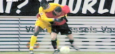

Dinsdag 31 juli:
Helmond Sport - Roda JC
vervroegd
>>>
Helmond Sport - Roda JC, 31 januari 2005
>>>
Zondag 29 juli:
Rodagirl Monique
>>>
Zondag 29 juli:
NEC - Roda JC: 0-1 (88': Vandamme)
Penalty's: 4-2
Uitleg puntentelling Maritiem Toernooi
>>>
Zaterdag 28 juli:
Rodasupporter Maurice Horsch getrouwd
>>>
Vrijdag 27 juli:
In de oefenwedstrijd tegen het Helders Elftal bleek dat Roda JC al aardig op de rit staat. Trainer Atteveld wil er niettemin toch een spits bij
>>>
Vrijdag 27 juli:
Woensdag 1 augustus VIJLERHOFFEEST met NETWORK
>>>
Donderdag 26 juli:
De Graafschap - NEC: 0-0 (penalty's: 4-3)
Helders elftal - Roda JC: 0-4
(Sonkaya, De Jong, Sibum, Vandamme) (extra penalty's: 2-4)
Donderdag 26 juli:
Roda JC wil verder met Poolse doelman
>>>
Dinsdag 24 juli:
Selectie Roda JC naar trainingskamp Den Helder
>>>
Maandag 23 juli:
Belangstelling voor Ajacied Krohn
>>>
Maandag 23 juli:
Atteveld weer woedend
>>>
Tevreden over Tyton
>>>
Zaterdag 21 juli:
Atteveld woest na magere zege Roda tegen amateurs
>>>
Zaterdag 21 juli:
Vanavond speelde Roda JC een oefenwedstrijd tegen hoofdklasser VV Gemert. Roda JC won met 0-2 door treffers van Meeuwis (penalty) en Janssen.
Meer
>>>
Vrijdag 20 juli:
Herstel Cisse duurt langer dan verwacht
>>>
Dinsdag 17 juli:
Jaarlijkse foto- en persdag
>>>
Zaterdag 14 juli:
SV Heerlen - Roda JC: 0-7
>>>
Donderdag 12 juli:
Loting KNVB-beker
>>>
Donderdag 12 juli:
Paria wil revanche bij Roda
>>>
Dinsdag 10 juli:
Voorbereidende werkzaamheden bouw hotel aan de gang
>>>
Maandag 9 juli:
Selectie niet compleet bij eerste training
>>>
Maandag 9 juli:
Aevitae hoofdsponsor Roda JC
>>>
Donderdag 5 juli:
15-jarig talent op proef bij Roda
>>>
Donderdag 5 juli:
Humphrey Rudge voetbalt de komende twee seizoenen voor RKC. De verdediger komt over van Roda JC, waar hij transfervrij mocht vertrekken. RKC kwam bij Rudge uit, nadat Peter van den Bergh ervoor koos zijn aflopende contract met FC Den Bosch te verlengen.
Bron: AD
Verkoop SCC's RKC dramatisch gekelderd
>>>
Woensdag 4 juli:
Hadouir misschien, Huysegems niet naar Roda
>>>
Internet
:
Http://www.koempel.nl
Contact:
koempel
ad
koempel
dot
nl
Web
koempel.nl
|
Foto's
|
Audio
|
Overige
|
Verslagen
|
Interactief
|
Links
|
Calendar